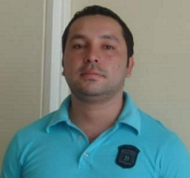

Etiquetas Básicas de HTML, Atributos y Valores
Inicio
Temas de estudio
Tema 1
Tema 2
Recursos Digitales
Recurso Audiovisual 1
Recurso Audiovisual 2
Aprendizaje
Actividad 1
Actividad 2
Acerca de
Autor

Martin Andres Quevedo Quimbayo
Ingeniería de sistemas
maquevedoq@unadvirtual.edu.co